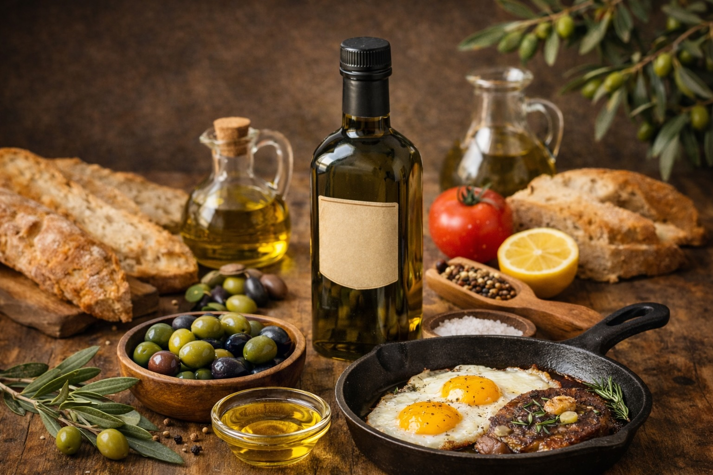

Superfoods: Extra Virgin Olive Oil
Last updated: February 7, 2026

- EVOO is the daily choice — a fresh fruit juice with protective polyphenols and stable monounsaturated fat.
- EVOO works for most home pan cooking (eggs, fish, sautéing, moderate heat). Avoid deep frying or repeatedly overheating any oil.
- Freshness + storage matter: buy smaller bottles, store cool and dark, and use within a few months of opening.
- Use other oils as tools: avocado oil or ghee for high heat; minimize highly refined “vegetable/seed oils” for routine use.
Purpose: Explain why extra virgin olive oil earns “daily superfood” status, how to use it under heat, and how to avoid confusing labels that lead to low‑quality oils.
Why extra virgin olive oil qualifies as a superfood
Extra virgin olive oil (EVOO) is often treated as “just another healthy fat.” That undersells it. EVOO is a fresh fruit juice made by mechanically pressing olives without chemical refining. When it’s fresh and authentic, EVOO delivers a rare combination of stable fats and bioactive compounds that support metabolic and inflammatory balance.
- Oleic acid (monounsaturated fat): a stable fat that supports metabolic resilience and resists oxidation better than fragile polyunsaturated oils.
- Polyphenols: compounds such as oleocanthal and hydroxytyrosol that contribute to antioxidant defenses and anti‑inflammatory signaling.
- Natural stability: EVOO’s composition helps it hold up well under normal home‑cooking conditions.
This is why EVOO appears repeatedly in research on Mediterranean dietary patterns, cardiometabolic health, and longevity. Used consistently, it functions as a food with benefits that extend beyond calories.
Types of olive oil (only one matters here)
Not all “olive oil” is the same. This article focuses on extra virgin.
Extra virgin olive oil (EVOO)
- Mechanically extracted (no solvents).
- Not chemically refined.
- Retains aroma, flavor, and polyphenols.
Peppery or slightly bitter notes are often a good sign. They can indicate higher polyphenol content (the “peppery throat bite” many people notice).
“Pure,” “Light,” or “Extra Light” olive oil
These products are typically refined and sometimes blended. They may be neutral and tolerate higher heat, but they’re nutritionally stripped and do not offer the same superfood value as EVOO.
Heat use: eggs, fish, chicken, meat
The common myth is that olive oil shouldn’t be used for cooking because smoke point is “low.” In practice, oxidative stability matters more than smoke point. EVOO performs well in normal home pan cooking because it’s rich in monounsaturated fat and protective compounds.
Great EVOO use cases
- Eggs in a pan: gentle heat and short cook time make EVOO a great fit.
- Fish: especially at medium heat; EVOO also shines as a finishing oil after cooking.
- Sautéing vegetables and everyday pan cooking.
- Chicken and meat: normal pan temperatures, especially thinner cuts or moderate browning.
If you’re searing aggressively on high flame or cast iron, or you often overshoot temperature, use a high‑heat “tool oil” instead:
- Avocado oil: neutral, high heat.
- Ghee / clarified butter: very stable, high heat.
- Coconut oil: stable, but flavor‑specific.
A simple rule: if you smell the oil before your food, the heat is too high. Once any oil is smoking heavily or smells burnt, it’s done — don’t try to “push through.”
Oils to limit or avoid
Highly refined seed oils are optimized for manufacturing and shelf life. For routine home cooking, they are best minimized.
- Soybean oil
- Corn oil
- Canola oil (especially refined)
- Generic “vegetable oil” blends
- High‑omega‑6 sunflower or safflower oils
This doesn’t require fear. It’s simply a preference for oils that are more stable, less processed, and more supportive as daily defaults.
Labels and buying preferences
Freshness matters more than prestige. A few label cues improve your odds of getting real EVOO:
- Look for “Extra Virgin Olive Oil” — not “light” or “pure.”
- Prefer a harvest date (not just an expiration date).
- Prefer single‑origin sourcing when possible.
- Choose dark glass or metal containers.
- Buy smaller bottles more often instead of one large bottle that sits for months.
Storage
Treat EVOO like a fresh food. It degrades with light, heat, oxygen, and time. Store it away from the stove, reseal promptly, and aim to use it within a few months of opening.
Practical daily guidance
- EVOO as your daily oil.
- Cook gently; finish generously.
- Use other oils only when EVOO isn’t the right tool.
- Avoid oils designed for factories, not kitchens.
Resources
Next steps
Continue with other Superfoods articles.
This article focuses on general food quality and metabolic resilience, not medical advice.